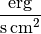
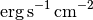

String representations of units¶
Converting units to string representations¶
You can control the way that Quantity and UnitBase objects are rendered as
strings using the new Format String Syntax.
New-style format strings use the "{}".format() syntax. Most of
the format specifiers are similar to the old %-style formatting,
so things like 0.003f still work, just in the form
"{:0.003f}".format().
For quantities, format specifiers, like 0.003f will be applied to
the Quantity value, without affecting the unit. Specifiers like
20s, which would only apply to a string, will be applied to the
whole string representation of the Quantity. This means you can do:
>>> from astropy import units as u
>>> import numpy as np
>>> q = 10. * u.km
>>> q
<Quantity 10.0 km>
>>> "{0}".format(q)
'10.0 km'
>>> "{0:+0.03f}".format(q)
'+10.000 km'
>>> "{0:20s}".format(q)
'10.0 km '
To format both the value and the unit separately, you can access the Quantity
class attributes within new-style format strings:
>>> q = 10. * u.km
>>> q
<Quantity 10.0 km>
>>> "{0.value:0.003f} in {0.unit:s}".format(q)
'10.000 in km'
Because Numpy arrays don’t accept most format specifiers, using specifiers like
0.003f will not work when applied to a Numpy array or non-scalar Quantity.
Use numpy.array_str() instead. For example:
>>> q = np.linspace(0,1,10) * u.m
>>> "{0} {1}".format(np.array_str(q.value, precision=1), q.unit)
'[ 0. 0.1 0.2 0.3 0.4 0.6 0.7 0.8 0.9 1. ] m'
Examine the numpy documentation for more examples with numpy.array_str().
Units, or the unit part of a quantity, can also be formatted in a
number of different styles. By default, the string format used is
referred to as the “generic” format, which is based on syntax of the
FITS standard’s format for representing units, but supports all of the
units defined within the astropy.units framework, including
user-defined units. The format specifier (and
to_string) functions also take an
optional parameter to select a different format, including
"latex", "unicode", "cds", and others, defined below.
>>> "{0.value:0.003f} in {0.unit:latex}".format(q)
'10.000 in $\\mathrm{km}$'
>>> fluxunit = u.erg / (u.cm ** 2 * u.s)
>>> "{0}".format(fluxunit)
u'erg / (cm2 s)'
>>> print("{0:console}".format(fluxunit))
erg
------
s cm^2
>>> "{0:latex}".format(fluxunit)
u'$\\mathrm{\\frac{erg}{s\\,cm^{2}}}$'
>>> "{0:>20s}".format(fluxunit)
u' erg / (cm2 s)'
The to_string method is an alternative way to
format units as strings, and is the underlying implementation of the
format-style usage:
>>> fluxunit = u.erg / (u.cm ** 2 * u.s)
>>> fluxunit.to_string('latex')
u'$\\mathrm{\\frac{erg}{s\\,cm^{2}}}$'
Creating units from strings¶
Units can also be created from strings in a number of different
formats using the Unit class:
>>> from astropy import units as u
>>> u.Unit("m")
Unit("m")
>>> u.Unit("erg / (s cm2)")
Unit("erg / (cm2 s)")
>>> u.Unit("erg.s-1.cm-2", format="cds")
Unit("erg / (cm2 s)")
Note
Creating units from strings requires the use of a specialized
parser for the unit language, which results in a performance
penalty if units are created using strings. Thus, it is much
faster to use unit objects directly (e.g., unit = u.degree /
u.minute) instead of via string parsing (unit =
u.Unit('deg/min')). This parser is very useful, however, if your
unit definitions are coming from a file format such as FITS or
VOTable.
Built-in formats¶
astropy.units includes support for parsing and writing the following
formats:
"fits": This is the format defined in the Units section of the FITS Standard. Unlike the “generic” string format, this will only accept or generate units defined in the FITS standard."vounit": The Units in the VO 1.0 standard for representing units in the VO. Again, based on the FITS syntax, but the collection of supported units is different."cds": Standards for astronomical catalogues from Centre de Données astronomiques de Strasbourg: This is the standard used by Vizier tables, as well as what is used by VOTable versions 1.2 and earlier."ogip": A standard for storing units as recommended by the Office of Guest Investigator Programs (OGIP).
astropy.units is also able to write, but not read, units in the
following formats:
"latex": Writes units out using LaTeX math syntax using the IAU Style Manual recommendations for unit presentation. This format is automatically used when printing a unit in the IPython notebook:>>> fluxunit
"latex_inline": Writes units out using LaTeX math syntax using the IAU Style Manual recommendations for unit presentation, using negative powers instead of fractions, as required by some journals (e.g., Apj and AJ.) Best suited for unit representation inline with text:>>> fluxunit.to_string('latex_inline')
"console": Writes a multi-line representation of the unit useful for display in a text console:>>> print(fluxunit.to_string('console')) erg ------ s cm^2
"unicode": Same as"console", except uses Unicode characters:>>> print(u.Ry.decompose().to_string('unicode')) m² kg 2.1798721×10-¹⁸ ───── s²
Unrecognized Units¶
Since many files in found in the wild have unit strings that do not
correspond to any given standard, astropy.units also has a
consistent way to store and pass around unit strings that did not
parse.
Normally, passing an unrecognized unit string raises an exception:
>>> # The FITS standard uses 'angstrom', not 'Angstroem'
>>> u.Unit("Angstroem", format="fits")
Traceback (most recent call last):
...
ValueError: 'Angstroem' did not parse as fits unit: At col 0, Unit
'Angstroem' not supported by the FITS standard. Did you mean
10**-1 nm, Angstrom (deprecated) or angstrom (deprecated)?
However, the Unit constructor has the keyword
argument parse_strict that can take one of three values to control
this behavior:
'raise': (default) raise a ValueError exception.'warn': emit a Warning, and return anUnrecognizedUnitinstance.'silent': return anUnrecognizedUnitinstance.
So, for example, one can do:
>>> x = u.Unit("Angstroem", format="fits", parse_strict="warn")
WARNING: UnitsWarning: 'Angstroem' did not parse as unit format
'fits': At col 0, 'Angstroem' is not a valid unit in string
'Angstroem' [astropy.units.core]
This UnrecognizedUnit object remembers the
original string it was created with, so it can be written back out,
but any meaningful operations on it, such as converting to another
unit or composing with other units, will fail.
>>> x.to_string()
'Angstroem'
>>> x.to(u.km)
Traceback (most recent call last):
...
ValueError: The unit 'Angstroem' is unrecognized. It can not be
converted to other units.
>>> x / u.m
Traceback (most recent call last):
...
ValueError: The unit 'Angstroem' is unrecognized, so all arithmetic
operations with it are invalid.